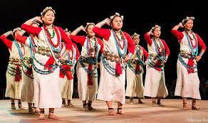

Exploring India's Culture and Heritage
Classical Dance Forms of India
Buiya Dance is a traditional folk dance performed by the Bonda tribe, one of the most primitive tribal communities of Odisha, India. This dance is an integral part of Bonda culture and is usually performed during festivals and special occasions like marriages or religious ceremonies. It is characterized by rhythmic group movements, accompanied by tribal instruments such as drums and flutes. The women, dressed in their distinctive traditional attire with heavy bead jewelry and minimal clothing, form circles and move in harmony, while the men often play instruments and sing. The Buiya dance is not just a form of entertainment but a medium to express joy, unity, and the rich heritage of the Bonda people.
Buiya is a vibrant folk dance form performed by the tribes of Arunachal Pradesh, particularly the Digaru Mishmis. It is usually showcased during important community festivals and social gatherings. The dance celebrates unity, harmony, and the spirit of festivity among the tribes. Performed by both men and women, Buiya features synchronized steps, rhythmic movements, and is often accompanied by traditional instruments like drums and gongs. Dancers wear colorful traditional attire adorned with beads, feathers, and ornaments, adding to the visual appeal of the performance. Buiya is not just a dance, but a cultural expression that strengthens community bonds and preserves ancestral heritage.
The Buiya dance has its roots in the ancient tribal traditions of the Nicobarese community in the Andaman and Nicobar Islands. It has been passed down through generations as a ritualistic and celebratory dance, deeply embedded in the cultural life of the Nicobarese people. Historically, Buiya was performed during important social and spiritual gatherings, especially during the Ossuary feasts, which are ceremonies held to honor and remember deceased ancestors. The dance served as a way to connect with ancestral spirits, seek blessings, and maintain harmony within the community.
Buiya is typically performed in groups, with both men and women forming a circle or line and moving rhythmically to the beat of traditional music. The dancers wear colorful tribal attire made from natural materials like leaves, shells, and handwoven fabrics. The movements are simple yet graceful, involving gentle swaying, clapping, and foot-tapping. The music is usually created with local instruments such as bamboo flutes and handmade drums, giving the performance a distinct and earthy rhythm. The dance often continues for hours, building a lively and festive atmosphere in the village.
The Buiya dance holds deep cultural and social significance among the Nicobarese people. It is usually performed during Ossuary feasts (ceremonies related to ancestral worship), wedding celebrations, and harvest festivals, especially to mark successful rice harvests. The dance symbolizes unity, joy, and gratitude to nature and the spirits of ancestors. It also serves as a way of preserving oral traditions, as songs and chants sung during the dance often tell stories from the tribe’s history and beliefs.